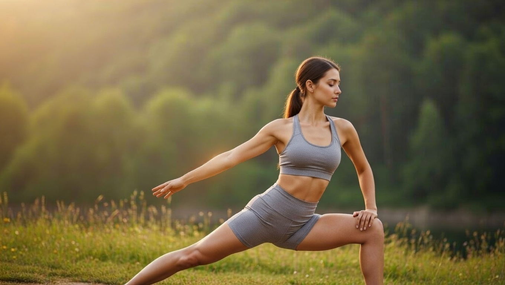

6 Simple Yoga Poses to Boost Energy Focus & Mental Clarity

3 Min Read
24 Feb, 2026

6 Simple Yoga Poses to Boost Energy Focus & Mental Clarity
In today's fast-paced world, maintaining energy, focus, and mental clarity is crucial for productivity and overall well-being. One of the most effective ways to achieve this is by incorporating simple yoga poses into your daily routine. Yoga is a holistic practice that not only improves physical health but also enhances mental and emotional well-being. In this article, we will explore six simple yoga poses that can help boost energy, focus, and mental clarity. Yoga for energy and mental clarity involves a combination of physical postures, breathing techniques, and meditation. These practices help to increase blood flow, oxygenation, and energy levels in the body, while also calming the mind and reducing stress. By incorporating these simple yoga poses into your daily routine, you can experience significant improvements in your overall well-being. Some key benefits of practicing yoga for energy and focus include:- Improved physical and mental energy levels
- Enhanced focus and concentration
- Reduced stress and anxiety
- Improved sleep quality
- Increased flexibility and balance
- Boosted mood and overall sense of well-being
Simple Yoga Poses for Energy and Focus
To get started with yoga for energy and focus, it's essential to begin with simple poses that can be modified to suit your fitness level. Here are six simple yoga poses that can help boost energy, focus, and mental clarity:| Yoga Pose | Benefits |
|---|---|
| Downward-Facing Dog | Stretches hamstrings, calves, and spine, improving flexibility and balance |
| Warrior Pose | Strengthens legs, hips, and core, improving focus and concentration |
| Tree Pose | Improves balance, focus, and mental clarity, reducing stress and anxiety |
| Seated Forward Fold | Stretches hamstrings, calves, and spine, improving flexibility and reducing stress |
| Cobra Pose | Strengthens back muscles, improving posture and reducing fatigue |
| Child's Pose | Stretches back, hips, and legs, promoting relaxation and reducing stress |
Creating a Daily Movement Routine
Also Read
Check out more trending news hereConclusion
In conclusion, simple yoga poses can be a powerful tool for boosting energy, focus, and mental clarity. By incorporating these poses into your daily routine, you can experience significant improvements in your overall well-being. Remember to start slow, listen to your body, and be patient with yourself as you explore the many benefits of yoga. With regular practice, you can unlock the full potential of your mind, body, and spirit, and achieve a deeper sense of energy, focus, and mental clarity.
Sarah Mitchell
Senior Tech Editor bringing you the most accurate breaking news and honest reviews from the tech world.
Leave a Comment